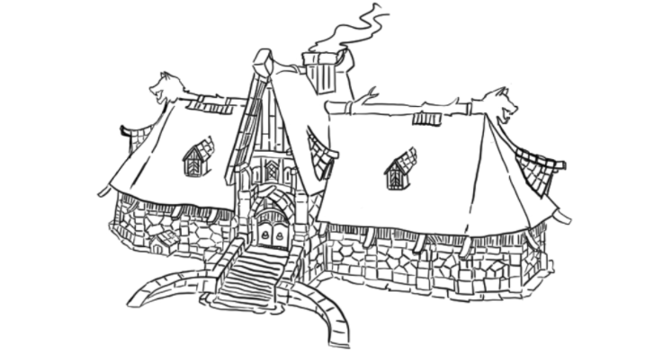
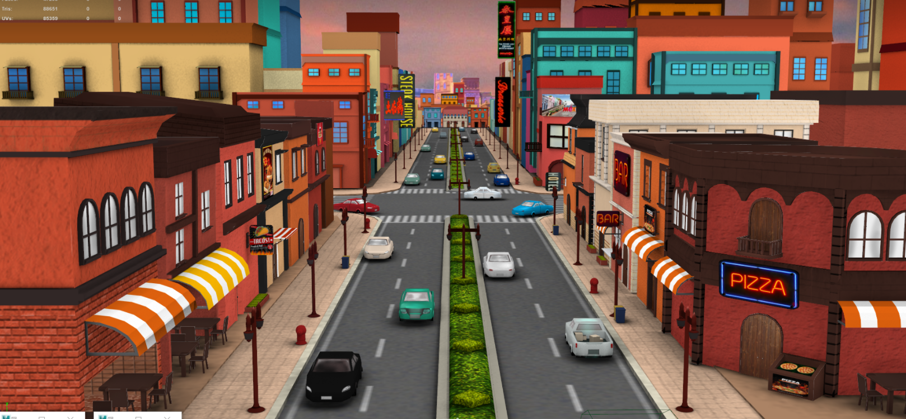

Project
ตัวผลงานนี้เป็นผลงานส่วนหนึ่งในวิชา Model ในช่วงการศึกษาปี 1 โดยได้รับโจทย์ให้ทำการออกแบบบ้านเพื่อนำไปใช้ในการออกแบบในรูปแบบของ Model3D โดยตัวบ้านที่ผมออกแบบนั้นได้แรงบันดาลใจจากบ้านสมัยปี 1700 ของชาวไวกิ้งสมัยก่อนซึ่งได้นำมาใช้ในการออกแบบเป็นหลักในการออกแบบจนได้ตัวภาพร่างมาดังนี้

Project
ตัวผลงานนี้เป็นผลงานส่วนหนึ่งในวิชา Model ในช่วงการศึกษาปี 2 โดยได้รับโจทย์ให้ทำการออกแบบเมืองเพื่อนำไปใช้ในการออกแบบในรูปแบบของ Model3D โดยตัวงานนี้เป็นงานกลุ่ม 3 คนโดยที่ตัวผมได้รับหน้าที่ขึ้นโครงในเมืองโซนด้านหน้าซึ่งตัวเมืองเราได้รับการออกแบบร่างจากเมืองสไตล์เม็กซิกัน-อเมริกันโดยเมืองสไตล์นั้นจะเป็นเมืองที่ออกแนวคลาสสิกเหมือนสมัยก่อนและสีออกไปในทางโทนร้อน
Project
ตัวผลงานนี้เป็นผลงานส่วนหนึ่งในวิชา GDM ในช่วงการศึกษาปี 2 ซึ่งงานนี้ถูกทำในหัวข้อ Game trailer โดยตัวงานนี้เป็นงานกลุ่ม 3 คนโดยที่ตัวผมได้รับหน้าที่ขึ้นในการออกแบบ material ของฉากและ effect ประกอบฉากเช่น หมอก ควัน ฝุ่น และ อีกา
Project
ตัวผลงานนี้เป็นผลงานส่วนหนึ่งในวิชา GDM ในช่วงการศึกษาปี 2 ซึ่งงานนี้ถูกทำในหัวข้อ Game trailer โดยได้รับโจทย์ให้ทำการออกแบบฉากใน trailer โดยการใช้ camera ของ Unity ในการออกแบบมุมกล้องต่างๆภายใน trailer ของตัวงาน